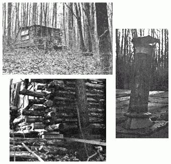
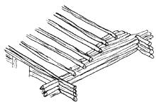
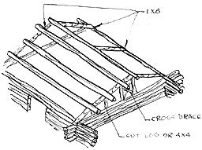
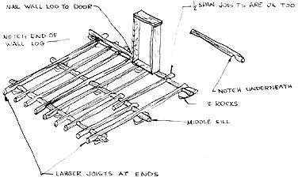
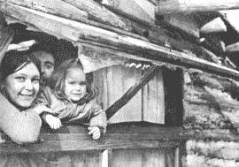
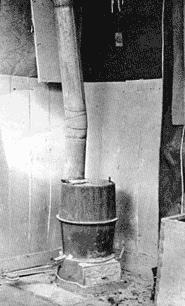

There is no need to think in terms of a multithousand dollar expense for a house. A warm cozy log cabin can be built easily in a few months time for a cost of under $100. My 12 x 12 log cabin at the Heathcote Community took 2 1/2 months and $25 to build. If I had had more knowledge or prior skill the construction would have taken less time and the cabin could have been larger. As it is, the house is both asthetic and functional and should stand a number of years with only minor repairs.
Since you will probably cut down the trees you use, you should consider a site close to your source of wood. Other things to consider in choosing a site are drainage, flooding of nearby creeks, sources of water, availability of electricity (we don't have any) and distance for supplies to be carried. You should clear dead trees from near the site and not build too close to any live trees.
Your tools are a matter of choice. I found that a sharp axe beats a poorly running chain saw, but a good gas driven, light weight chain saw saves time and effort. Basic tools should include an axe, sharpening stone, assorted nails, hand saws, drill, tape measures, carpenter's square, shovel, level and plumb line. You can improvise a jar of water and a string with a weight on it for a level and plumb line.
Available scrap or low cost used lumber often determine what supplies you should purchase and it wouldn't be a bad idea to gather much of this, including used doors and windows, beforehand. My roof is made entirely from used doors and windows and whatever scrap lumber I couldn't use was quickly consumed as winter firewood. Good sources of free wood include town dumps, construction sites, and barns or buildings that are being torn down. You should also be looking for a piece of metal or asbestos to go under your cast iron stove. I bought my stove for $4 at a junk yard but don't feel bad if you have to spend up to $35 for one.
Because of our interest in ecology, we do not cut any live trees at Heathcote. Standing dead trees in good condition are excellent to use and there is no problem of live logs shrinking while they are drying. Another meth od, if you have time, is to season live trees for six or more months.
Almost any type of wood can be used if you have a high and dry foundation, but you may want to avoid aspen, basswood, buckeye, cottonwood, poplar, and willow. Strip the bark to protect against insects and rot and you are ready to build.
In setting down the foundation, you must first consider the size of your house. If you plan to use plywood for the floor you will save sawing by having your inner dimensions divisible by 4. My inner dimentions ate 12x 12 and I placed nine foundation stones a safe 6 feet apart on all sides and in the middle. A good method for a stone foundation is to dig 2-feet-deep holes and fill with medium sized stones. Fill with earth and place two large flat stones on top. Your cabin should set at least 12 inches off the ground.
If stones are not available you can use poured concrete or blocks. However, a wooden post foundation is more asthetic than concrete. Strip the bark and treat your cut posts with concrete or another wood preserver. Old crankcase oil is said to work also. Place a flat stone in a 3 foot deep pit; place your post and fill around the post with small rocks and subsoil.
My next step was to lay 3 sturdy 14 foot logs for floor sills over the foundation stones and to lay floor joists, 18 inches apart, cross-wise over these. I was lucky enough to find scrap 4 x 4's to use for floor joists but old railroad ties, straight logs, or 2 x 4's could also be used. Your floor may best be nailed onto the joists after the roof is completed so that it won't be ruined by rain. I used plywood but almost any type of wood can be used for flooring.
I then determined the placing of door and window framing. Since I was able to locate scrap doors and windows easily, I didn't restrict myself on their use. A layer of plastic tacked on protects against heat loss and the extra light and airiness make up for this slight deficit. Another advantage of many windows is that you do not have to have as many long spans of logs. To save money, locate used windows and doors and build your framing accordingly. The simplest window to install is one on hinges.
You are now ready to begin the walls. Each log set down should be notched on the under side and set on top of the log going the other way. You'll only need nails to steady logs to door and window framing but not in corners. The notches lock the logs in place. If notches were made on the top side of the logs, water may collect and of the ten or twenty other methods of fitting corners, I found this easiest or soundest. Do not worry about spaces between logs; they will be filled latter.
Throughout this construction don't forget the level and plumb line. I tried to sight my floor by eye and have a slight slant.
There are so many types of roof possible that I am sketching both mine and another that may be better. Plan on a 1/4 pitch for snow safety. I have about a 1/6 pitch, but Maryland snows are not too heavy. I built the walls 8 inches higher than the windows and door in the front 2/3 of the cabin and then proceeded to set the front roof beams up on blocks or posts to create the pitch. Two methods of doing this, are illustrated. You can have a one slant or two slant roof and you can fill spaces left by this method with cut and fitted logs or cheat (like I did) and use scrap lumber.
I used scrap doors (some with glass for skylights) for my roof which I placed on 14 foot log beams spaced 2 feet apart. Over the doors I used 3 rolls of tarpaper roof ing and caulked all seams. The local hardware store sold these supplies and explained their application. Exterior plywood, shingles, scrap wood and hand-made shakes can also be considered for roofing.
You are now ready to fill in the cracks. Whatever couldn't be done with thin logs and scrap wood or bark I filled with mud. This was done by digging a foot into the ground for mud richer in clay than humus and mixing it with straw, dry grass or stringy inner bark. Balls of this were made and shoved into all open spaces. This took more time than imagined and if you can invite friends over for a chinking party it wouldn't be a bad idea. If you over-hang your roof a foot or more on each side you will protect these walls from heavy rain or snow. Although much rain, snow and wind has blown against the cabin, the chinking has held well.
I would recommend a wood burning cast iron stove over a fire place. It is inexpensive, easy to install, burns for a long time, throws off sufficient heat and is as asthetic as it is functional. Place sheet metal or asbestos underneath and around near walls in case of sparks and excessive heat. Then cut a hole in the roof with a keyhole saw leaving at least 4 inches around the stove pipe and extend it higher than the peak of your roof for the best draw. Fittings which connect the stove pipe to the roof are illustrated and further explained at many rural hardware stores or supply companies.
If you want extra warmth inside, place corrugated cardboard over your floor and place padding and rugs over that. On the walls you can also place rugs, material, dyed burlap bags or blankets. For even more insulation place a layer of plastic in-between the material and the wall. I did this for warmth but make sure the roof beams and other logs still showed to retain the natural beauty of the log interior.
Further information can be secured from books such as How to Build your Home in the Woods by Bradford Angier and by visiting log cabins or talking to old timers who may have built some.
As my cast-iron stove begins to heat, I write by the light of a kerosene lamp and hope that your log cabin is as cozy as mine.
|
 ALL LOG FRAMEWORK BEAMS SET IN ""STEPS |
 ANOTHER TYPE OF ROOF FRAMING |
 MY ROOF FRAMING |
|
 BASIC FRAMING |
 |
 |